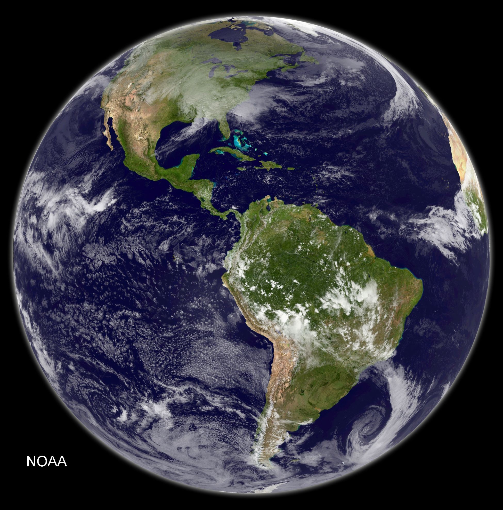

Executive Summary
AI weather models predict the next few days astonishingly well. Ask the same models about the distant climate, though, and the story changes. A 2026 study in Geophysical Research Letters reported that FourCastNet, Pangu-Weather, and the climate emulator ACE2 all predict a future colder than reality. The size of that bias resembled a climate 15–20 years earlier than the forecast target, and in some regions such as the eastern United States it looked more like a climate 20–30 years earlier. So why does the very AI that nails the next few days quietly step back the moment it faces the distant future's climate?
The cause lies not in how clever the model is but in what it learned from. The three models' training data mostly captures a past climate cooler than today's, and when the model meets an unfamiliar future it reverts to the average it knows. Yet a simple statistical baseline produced a more temporally consistent mean climate. On top of that, a separate study showed that ACE2 and NeuralGCM reproduce fast atmospheric dynamics as well as physics models do, yet miss slow variability that unfolds over seasons to years, such as the QBO and the Southern Annular Mode.
A high benchmark score does not mean the system is understood. Winning at the weather scale is a score within the region that overlaps the training distribution; the warming trend and low-frequency variability outside that distribution stay unmeasured to begin with. Borrowing the case from meteorology, this article draws out a data principle: what you train on decides what you can never know.
15–20 yrs
Forecast rolled into the past
How much earlier a climate all three models resembled
20–30 yrs
Eastern U.S. gap
The stronger the warming, the wider the gap
0–15 days
Where AI leads
On par with or ahead of physics models at the weather scale
Slow variability
The region left unreproduced
Low-frequency oscillations like the QBO and the SAM
Right on Weather, Wrong on Climate
Over the past few years, AI weather models have reshaped the landscape of forecasting. Google DeepMind's GraphCast, Huawei's Pangu-Weather, and the NVIDIA-lineage FourCastNet match or beat traditional numerical weather prediction on multi-day forecasts, and they produce a global forecast in seconds without a supercomputer. Headlines like "AI beats the weather service" have become familiar enough that AI's skill at short-range forecasting is beyond doubt.

Widen the horizon from days to decades, though, and the same models show a different face. In 2026, Landsberg and Barnes of Colorado State University and Boston University designed what amounts to a "future" experiment: they asked these models to predict a period well beyond their own training data. The weather models FourCastNet V2 and Pangu-Weather were tasked with winter surface temperature for 2020–2025, and the climate emulator ACE2 with 1996–2010. For all three, the target period is more recent than most of the model's training data, so each is effectively looking out onto an era it never learned.
The results all tilted one way. All three models predicted a mean temperature colder than reality, and the pattern resembled a climate 15–20 years earlier than the forecast target. In regions with pronounced warming, such as the eastern United States, it sometimes looked like a climate 20–30 years earlier. A model that nailed the next few days redrew the future as the past once the time horizon lengthened.
Key observation: Weather (0–15 days) and climate (decades) deal with the same atmosphere but are different problems. Skill at short-range forecasting does not guarantee skill at long-range prediction. If an AI that used to nail it steps back when it meets the climate, the reason lies not inside the model but in the data it learned from.
Why It Always Errs on the Cold Side
"Cold bias" refers to a systematic tendency for a model to predict temperatures consistently colder than reality. What matters is that this is not random error scattered in every direction but a bias that leans one way. The intriguing part of the study is that where and under what conditions the bias grew largest differed from model to model.
For the weather models FourCastNet and Pangu-Weather, the cold bias was largest at the hottest predicted temperatures. The more extreme the heat — a heatwave, say — the more the model underestimated it. That reads as a sign the models had not been exposed to enough of the record-breaking heat that has become more frequent lately. The climate emulator ACE2, by contrast, spread its bias fairly evenly across the temperature distribution, yet the bias grew largest in the regions, seasons, and temperature ranges where climate change has advanced the most.
The two flavors of bias point to a single cause. The training data mostly holds a past climate cooler than today's, so when the model meets an unfamiliar value it reverts to the average it knows. What statistics calls regression to the mean shows up here as regression to the training climate. The model finds the cooler past it has seen often more plausible than the hotter future it never learned.
The most painful point: A simple statistical baseline model actually provided a more temporally consistent mean climate than FourCastNet or Pangu. The common assumption that a more sophisticated AI gives a better answer did not hold on the stage of long-range climate. Sophistication is not the same as reliability.
It Catches the Fast Waves, Misses the Slow Rhythms
If cold bias is a problem of temperature, a separate study from the same period found a second crack in the motion of the atmosphere itself. Baxter and colleagues evaluated the fully data-driven emulator ACE2 and the AI–physics hybrid model NeuralGCM. Both learn to mimic atmospheric circulation from ERA5, the satellite-era reanalysis dating back to 1980.
The evaluation was not lenient. The two models were placed alongside those in AMIP, the international intercomparison project for traditional physics-based models, and examined one by one across four measures of atmospheric circulation: large-scale tropical waves, the interaction between midlatitude westerlies and eddies, the quasi-biennial oscillation of the equatorial stratosphere, and the poleward propagation of the Southern Annular Mode. On these four measures, the scores split sharply between fast and slow phenomena.
On fast phenomena, the scores were good. Fast atmospheric dynamics such as large-scale tropical waves and the interaction between midlatitude westerlies and eddies were reproduced on par with or better than traditional physics-based models, at far lower computational cost. Stop there and it looks as though the day AI replaces physics models is not far off.
The trouble was the slow phenomena. Low-frequency variability that repeats slowly over seasons to years — the quasi-biennial oscillation (QBO) of the equatorial stratosphere, or the poleward propagation of the Southern Annular Mode (SAM) — was something neither model captured properly. The QBO is the reversal of stratospheric winds on a cycle of roughly 28 months, and the SAM is an oscillation in the pressure distribution across the mid-to-high southern latitudes. A model that caught waves on the scale of days closed its eyes before rhythms that breathe slowly over years.

The takeaway: Fast atmospheric dynamics and slow climate variability are different kinds of problems. Winning at the former is no guarantee of winning at the latter. As cold bias in temperature and failed slow variability in circulation, the same conclusion showed up twice along two different axes.
A Benchmark Is Not Understanding
A commentary by Scaife in the same journal ties the two studies into a single diagnosis. He frames the achievements of AI climate models as a stage where "remarkable successes and disappointing failures" coexist. The success on multi-day forecasts is clear, but so is the limit: they fail to reproduce the atmosphere's very slow climate variability.
The point worth revisiting here is the nature of the benchmark. The scores AI weather models earn on leaderboards are mostly short-range forecast accuracy — that is, a score within the region that overlaps the training distribution. A good score in that region is no proof that the model has fully grasped the physics of the atmosphere. As Scaife stresses, what is needed now is the work of exposing, one by one, the aspects that had not been validated before. Only as this kind of validation accumulates can the next generation of models be led toward trustworthy long-range prediction.
Widen the lens a little and other studies from around the same time run in the same grain. Reports that physics-based models beat AI forecasts on record-breaking extreme events cracked the assumption that "AI is always better." AI has clearly separated regions where it wins and where it loses, and that boundary largely coincides with the boundary between where the training data is dense and where it is sparse.
One-line observation: A high benchmark score means "it does well within what was measured," not "it understands the system." The moment those two sentences are read as the same thing, failures outside the distribution quietly hide.
The Ceiling Set by Training Data
Carry this story out of meteorology and a question familiar to anyone who works with data remains. When we talk about AI performance, we usually look at the model first. We reach for more parameters, a newer architecture, a higher benchmark score. Yet what the cold-bias case shows is that no matter how new the architecture, if the training data's distribution itself stays lodged in the past, the model is structurally unable to see the future.
The crux is the distribution. The range where a model does well almost coincides with the range where the training data is dense, and beyond that distribution everything stays entirely unmeasured. The distant warming trend and the slow multi-year variability alike lie outside the model's field of view if they were not sufficiently captured in the training data. A benchmark does not flag this blind spot, because the evaluation itself takes place in the region that overlaps the training data.
In an earlier piece on data freshness, Pebblous told the story of how WeatherMesh beat ECMWF thanks to fresher data (The AI That Beat the Weather Service). Today's case is the other side of that coin. There are problems fresh data can answer, and there are problems it cannot — however fresh — as long as the distribution is locked in the past. A data's freshness and its representativeness are different axes.
So the working question becomes two-layered. Does the data our model learned from capture the future situations we are trying to predict? And does our evaluation scope inspect the region beyond the training distribution? Fail to answer these two, and a cold bias — winning the benchmark yet quietly wrong in practice — does not stay a story about meteorology alone. Whether it is fraud detection, demand forecasting, or autonomous operation, the principle holds the same: what you train on decides what you can never know.
One-line summary: A training data's distribution is the model's ceiling. A benchmark score is a result from inside that ceiling, while the real risk always grows quietly outside the distribution. Asking about the representativeness of the data and the scope of the evaluation before choosing a model is where AI-Ready Data begins.
References
- 1.Landsberg, J. B., & Barnes, E. A. (2026). "Forecasting the Future With Yesterday's Climate: Temperature Bias in AI Weather and Climate Models." Geophysical Research Letters, 53, e2025GL119740.
- 2.Baxter, I., Pahlavan, H. A., Hassanzadeh, P., Rucker, K., & Shaw, T. A. (2026). "Benchmarking Atmospheric Circulation Variability in an AI Emulator, ACE2, and a Hybrid Model, NeuralGCM." Geophysical Research Letters, 53, e2025GL119877.
- 3.Scaife, A. A. (2026). "Successes and Failures of Current AI Climate Models." Geophysical Research Letters, 53, e2026GL122615.